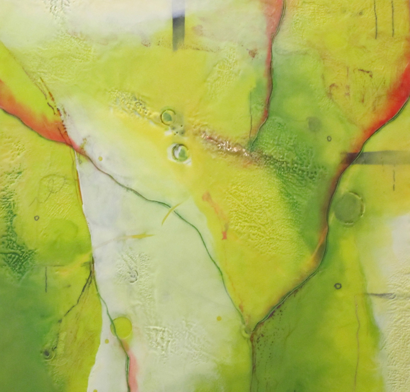

Kellie Weeks
July 2012 Gallery II
Artist Statement
One of the most fundamental components of my life is creativity. As I sift through the conundrums of the day to day tasks and engage with opportunity, pertinent information about my world is revealed to me through my work. Relationships, both past and present, are what fuel my art. My paintings are abstract in nature and communicate the many facets that comprise the web of social and familial structures. Ultimately they tell a story, and different stories may be read. Using both oil and encaustic as vehicles for achieving this spiritual illumination, objects are often seen yielding to one another and/or competing for space. Shapes are at times incomplete, interrupted, or overlapping. Color, a formidable key to my art, can also indicate bold intentions versus subdued reactions. All of these elements speak of relationships, journeys, and transformations. As I balance the tightrope between birth and death, I continually adjust my place in this world through my art. In an attempt to evoke a universal emotion, as I bestow this work to viewers, I hope that it can be the conduit needed for them to know and feel that they are alive.
“For art to me is an anecdote of the spirit, and the only means of making concrete the purpose of its varied quickness and stillness.”
-Mark Rothko
NKG June 29- July 20, 2012
Opening Reception Friday July 6, 2012 5-8 pm
NK Gallery
450 Harrison Avenue #61
Boston MA 021118
Gallery hours Wed- Sat 11am – 4pm
{kind=link}
{kind=link}
{kind=link}
{kind=link}
{kind=link}